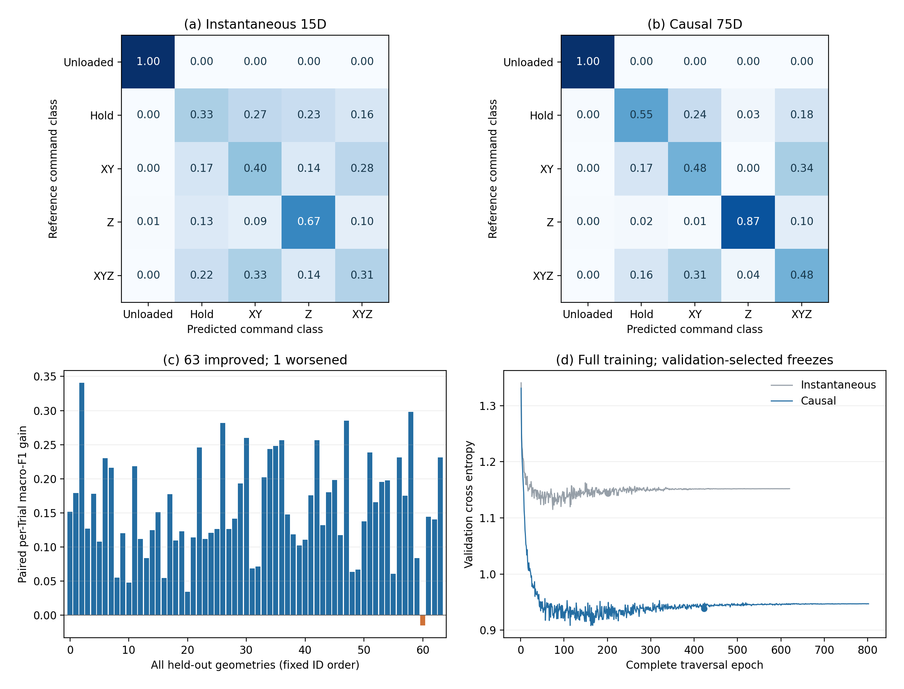

独立于旧发布包的补充入口。研究结果按模型和评价任务分别报告，不要求所有候选都改善，也不把局部收益扩展成整体精度提升。
早期1000条虚拟扩集候选在既有Yellow真实测试上XY误差下降14.8%，但源侧没有同样改善。两批分别采集的原生D路径中，第一条去固定平移后的形状误差下降29.4%、跳变下降51.4%；第二条形状误差退化，但跳变下降。原始误差和批次差异仍保留。
普通128条扩集模型在三批全部36条复杂真实轨迹上减少跳变（批均下降14.5%、14.1%、6.2%），三批停驻波动也降低；原始和去平移定位误差均未优于R373。稳定性收益与精度代价分别报告。
新因果动作识别：64条留出虚拟几何中，宏F1由0.453提高至0.616，63/64条改善。仅一个训练种子，类别是名义动作，不是独立测得的接触或力；尚无真实动作识别迁移证据。

两种输入、所有64条几何的配对差值及完整训练曲线；没有只选择有利轨迹。四模型处理同一未经额外滤波的真实磁流，保持实际B0、dt及因果状态；每批12条复杂Trial等权汇总。Centered XY为每条路径拟合的固定平移诊断，不是在线校准。以下全12个条件均展示。
| Batch | Model | Raw XY mm | Centered XY mm | Jump rate | Dwell RMS mm |
|---|---|---|---|---|---|
| SOURCE | R373 | 0.436 | 0.215 | 23.23% | 0.1120 |
| SOURCE | raw128 | 0.575 | 0.253 | 19.87% | 0.1046 |
| SOURCE | clean128 | 0.581 | 0.244 | 25.67% | 0.1168 |
| SOURCE | causal128 | 0.570 | 0.249 | 24.19% | 0.1131 |
| SOURCE_REPEAT | R373 | 0.452 | 0.224 | 24.56% | 0.1171 |
| SOURCE_REPEAT | raw128 | 0.583 | 0.264 | 21.09% | 0.1068 |
| SOURCE_REPEAT | clean128 | 0.590 | 0.255 | 26.71% | 0.1192 |
| SOURCE_REPEAT | causal128 | 0.580 | 0.261 | 25.36% | 0.1164 |
| Yellow | R373 | 0.521 | 0.478 | 46.34% | 0.1596 |
| Yellow | raw128 | 0.679 | 0.504 | 43.48% | 0.1521 |
| Yellow | clean128 | 0.733 | 0.529 | 49.50% | 0.1698 |
| Yellow | causal128 | 0.707 | 0.511 | 48.05% | 0.1659 |
clean128及causal128没有超过raw128的真实稳定性收益。虚拟去噪收益并不自动迁移到真实定位。已查看的真实数据属于冻结后的回顾性评价，非新盲测。
D复杂历史的原非单调峰值假设在真实停驻中0/6通过，保留为负结果。当前正向模型是基于已有真实标定数据拟合的单点经验动态模型，不是任意触头、多点接触或完整有限元数字孪生。
实物装置和运行现场参见原项目media。本补包未上传或发布。浏览器可运行静态前端；Python训练、实时硬件采集和离线回测不在GitHub Pages运行。